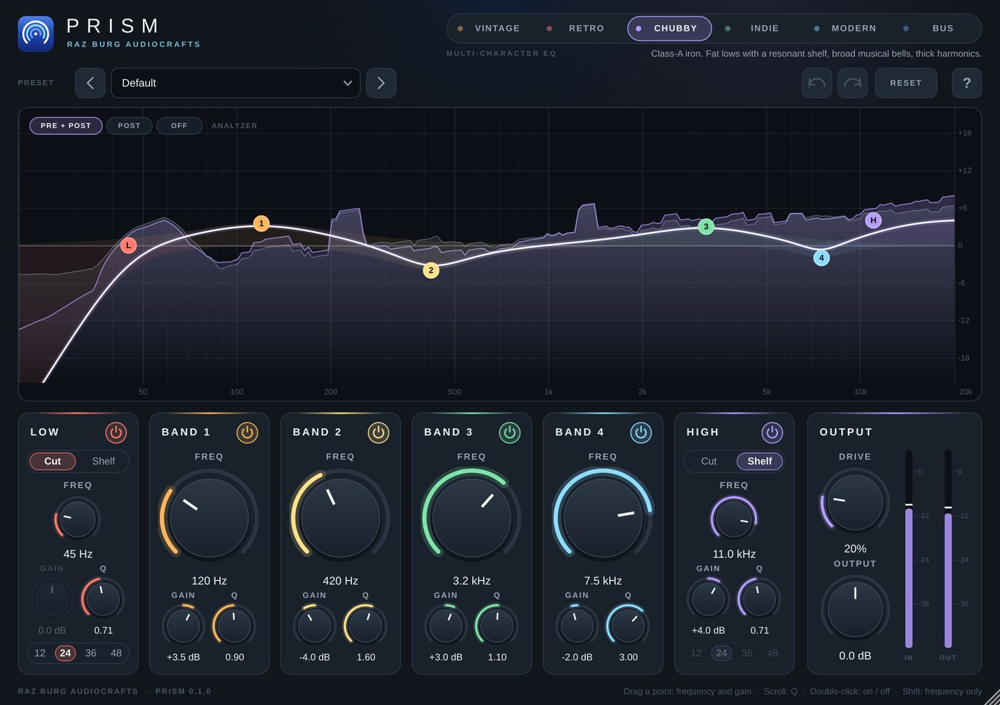

Prism User Guide
Prism is a six-band EQ with six characters. The controls are the same in every mode, so you can switch modes freely and hear how the same curve sounds in a different voice.
Modes
- Vintage: passive tube warmth. Very broad, gentle curves. A low-shelf boost also scoops the muddy low mids just above it, the classic way to get deep lows without boom. High boosts are broad, sweet resonant peaks that keep the very top lifted (the High band in Shelf mode becomes that peak), and high cuts are wide and gentle.
- Retro: 70s console silk. Bells start wide at small settings and get narrower the more you boost or cut. Sweet, forward mids and slightly resonant filter corners.
- Chubby: class-A iron. Broad musical bells, a resonant low shelf (a bump below the corner and a small dip above it), soft filter corners and heavy transformer weight when driven.
- Indie: large-format console bite. Tighter bells, shelves with overshoot and undershoot, and a gritty edge when driven.
- Modern: clean and exact. What you draw is what you get, with an open top end and no added color.
- Bus: mastering polish. Smooth, wide curves, shelves with no overshoot, gentle air and subtle harmonic glue.
The display
- The gray spectrum is your source before the EQ; the colored spectrum is the result after it. Choose PRE + POST, POST or OFF at the top left.
- The white line is the full EQ curve; each band's own curve is shaded in its color.
Working on the graph
Everything can be done right on the graph. The mouse works the way most pro EQs do:
Dragging
- Drag a point: frequency and gain together. On a cut (no gain), up and down sets the corner resonance (Q).
- Shift-drag: fine adjustment.
- Option/Alt-drag: one axis only (frequency or gain), whichever way you move first.
- Cmd/Ctrl + drag up or down: Q (up = narrower, down = wider).
- Drag the two small width dots beside a selected bell: set its width directly.
- You can press or release Shift and Cmd/Ctrl during a drag; the point continues smoothly.
Scrolling over a point
- Scroll: Q. On a cut: the slope (12, 24, 36, 48 dB/oct).
- Cmd/Ctrl + scroll: gain.
- Shift + scroll: fine.
Clicking
- Click a point: select it. Cmd/Ctrl-click: add or remove it from the selection. Shift-click: select every band in between.
- Drag on an empty area: draw a box to select several bands. Moving one selected point then moves them all.
- Option/Alt-click a point: switch the band on or off.
- Cmd/Ctrl + Option/Alt-click: Low or High band: Cut or Shelf.
- Option/Alt + Shift-click: next cut slope.
- Double-click a point: type its values. Tab steps through Frequency, Gain and Q; Return confirms, Esc cancels. Frequencies can be typed as 2.5k.
- Click an empty spot with nothing selected (or double-click / Cmd-Ctrl-click it anytime): brings a free band there. Click an empty spot while bands are selected: deselect.
- Right-click a point: band menu (On, Cut or Shelf, slope, Type values, Reset band). Right-click an empty spot: select all, all bands off, reset all bands.
Listening to one band
- Hover a point: its values appear in a small box with a speaker button.
- Press and hold the speaker: you hear only the part of the sound that band works on. A bell plays the range around its frequency (narrower with higher Q); the Low band plays everything below its corner and the High band everything above it (for a cut, exactly what it removes).
- While holding, drag sideways to sweep the band's frequency and up or down to set the listening level. Let go to return to the full sound.
Linear Phase
- Switch Linear Phase at the top right of the display. The EQ then shifts no phase at all: the same curve, with every frequency kept perfectly in time. Use it on the mix bus and in mastering, or on one of several tracks that share a source (drums, layered parts).
- Linear Phase adds about 100 ms of latency at 44.1 or 48 kHz; the host compensates for it automatically. Very steep cuts below about 40 Hz are a little gentler than in normal mode.
- With Linear Phase off, Prism has zero latency.
Bands
- Low: Cut (12, 24, 36 or 48 dB per octave) or Shelf. In Cut mode Q adds resonance at the corner; in Shelf mode it shapes the shelf.
- Band 1 to Band 4: bells from 20 Hz to 20 kHz, plus or minus 18 dB, Q from 0.1 (very wide) to 18 (very narrow).
- High: Cut or Shelf, like the Low band.
Output
- Drive: pushes the analog stage of the selected mode: harmonics, transformer weight and softness. At 0 the path is completely clean.
- Output: overall level, plus or minus 18 dB.
Tips
- Vocals: Low Cut at 80 to 100 Hz, a small cut around 300 Hz, a little presence at 3 to 5 kHz, air with a High Shelf.
- Kick: Low Shelf for weight, cut the box around 300 to 400 Hz, a narrow boost at 3 to 4 kHz for the beater.
- Mix bus: Bus mode, gentle shelves of 1 to 2 dB, a touch of Drive.
General
- Prism opens flat and passes the audio untouched. Reset returns to that state.
- Undo and Redo keep up to 100 steps. Double-click a knob to reset it.
- Zero latency (unless Linear Phase is on).
- Sessions saved with any earlier version of Prism open exactly as they were saved.
Licence
- Prism is free. Get it from My plugins at audiocrafts.razburg.com, with your free site account.
- The first time you open Prism, click Activate in browser. Your browser opens My plugins: sign in and click Activate there, and Prism unlocks by itself a few seconds later. No licence key, no iLok.
- Each account can activate Prism on up to two computers. To move it, click the ACTIVATED badge and choose Deactivate this computer, or remove the computer in My plugins.
- Prism checks its activation online about once a week. Offline is fine for up to 60 days. Until Prism is activated, the effect drops out for a moment every 40 seconds.
Updates
When you open Prism, it quietly checks audiocrafts.razburg.com for a newer version. If there is one, a small notice appears at the bottom right of the window. Click Download to open My plugins in your browser, or click the x to hide the notice until the next release. The check never affects the sound, and nothing appears when you are offline.